Թեստ 15
30:00
1. «Ճանապարհային երթևեկության անվտանգության ապահովման մասին» ՀՀ օրենքի համաձայն` անբավարար տեսանելիություն է համարվում`
2. ՙՃանապարհային երթևեկության անվտանգության ապահովման մասին՚ ՀՀ օրենքի համաձայն մայթ է համարվում
3. Տրանսպորտային միջոցների շահագործումն արգելվում է, եթե`
4. Տրանսպորտային միջոցների շահագործումն արգելվում է, եթե՝
5. Ո՞ր նկարում է վարորդը ճիշտ կատարում մանևրը:
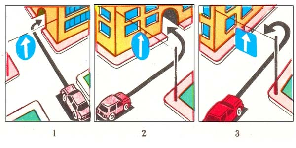
6. Այս ճանապարհային նշանը`
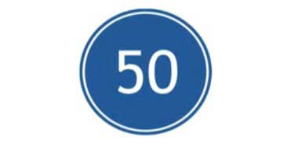
7. Ի՞նչպես պետք է վարվի վարորդը, եթե խաչմերուկում մտադիր է կատարել աջ շրջադարձ:
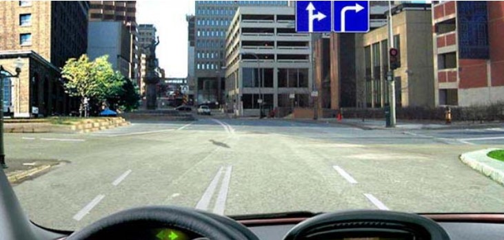
8. Տրանսպորտային միջոցները խաչմերուկը կանցնեն հետևյալ հերթականությամբ`
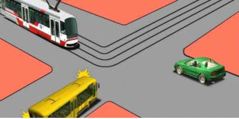
9. Դեպի աջից հարող ճանապարհ աջ շրջադարձ կատարելիս անհրաժեշտ է
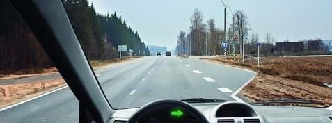
10. Նշված հետագծով աջ շրջադարձը
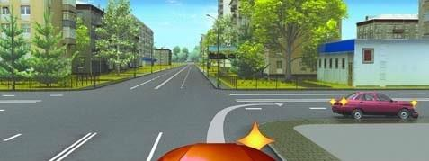
11. Ո՞ր նշաններից հետո է առանց թույլտվության երթևեկությունն արգելվում
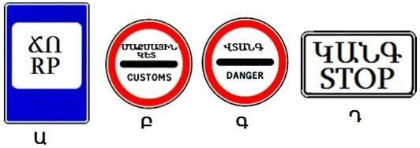
12. Խաչմերուկն անցնելիս այս իրավիճակում

13. Ավտոբուսը կանգ է առել հետիոտնին զիջելու համար: Թեթև մարդատար ավտոմոբիլի վարորդը տվյալ իրադրությունում խախտու՞մ է ճանապարհային երթևեկության կանոնների պահանջները:
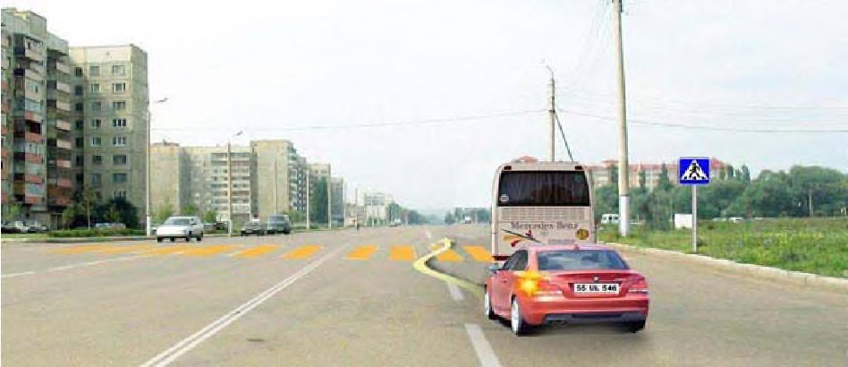
14. Ի՞նչ առավելագույն արագությամբ կարող է երթևեկել քարշակող ավտոբուսի վարորդը տվյալ իրավիճակում:
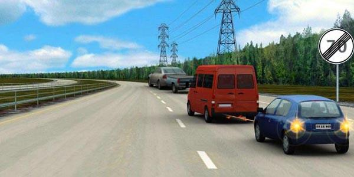
15. Թույլատրվում է արդյո՞ք ծառայողական առաջադրանք կատարելիս ինքնակամ բացել կամ շրջանցել ուղեփակոցը:
16. Ո՞ր տարբերակում է նշված արգելված դիրքով կայանումը կատարած վարորդը
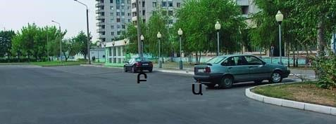
17. Բարձրացնել արագությունը վարորդին արգելվում է, եթե
18. Ո՞ր վարորդն ունի առաջնահերթ երթևեկության իրավունք
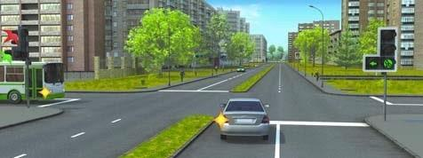
19. Ո՞ր հետագծով է թույլատրված աջ շրջադարձը
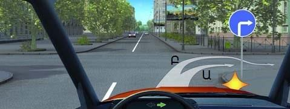